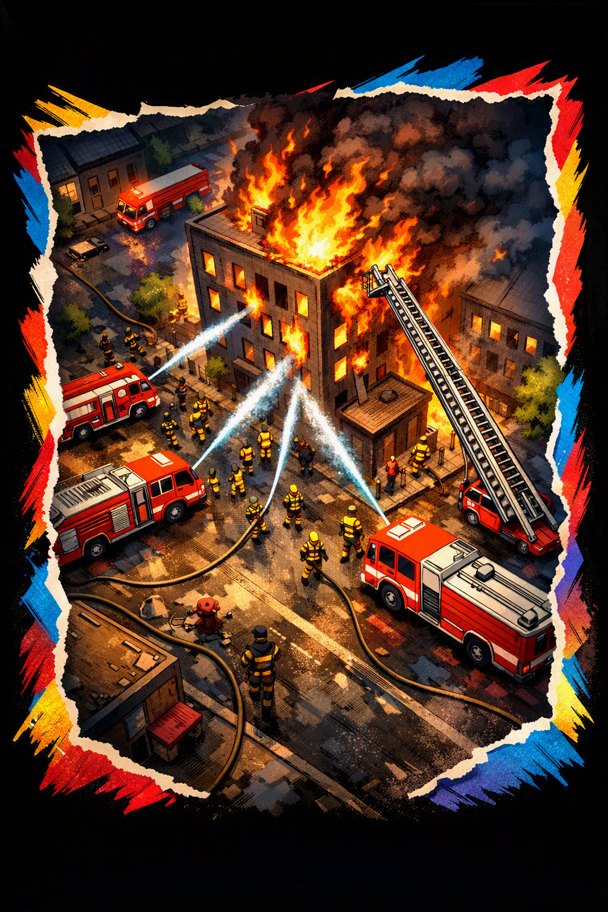

Firefighting Safety
Chemicals Firefighters Face
!
Smoke (particulates)
Respiratory irritation, long-term lung damage
☣
Carbon Monoxide
Reduces oxygen in blood, can cause death
☠
Hydrogen Cyanide
Blocks cellular oxygen use, highly toxic
⚗
Water
Slips, electrical hazards, steam burns
☣
Blood
Biological hazard, infection risk
How to Stay Safe
- Wear SCBA to avoid toxic gases.
- Use full turnout gear.
- Use medical gloves and face shields.
- Decontaminate gear after exposure.
- Follow WHMIS training.
- Limit time in smoke-heavy areas.
Materials Used in Firefighter Gear
Firefighter turnout gear is built from advanced heat‑resistant materials such as
Nomex and Kevlar, providing flame resistance and durability.
A moisture barrier—often made from Gore‑Tex—protects against steam burns and
keeps firefighters dry. The thermal liner insulates against extreme heat, while reflective
striping ensures visibility. Reinforced stitching and layered construction allow the gear
to withstand harsh conditions and heavy use.
Diagram of a Real Structure Fire

Hazards & Protection
Firefighters face dangerous chemicals, heat, smoke, and toxic environments.
Proper equipment and safety systems reduce exposure and injury risk.
Safety Equipment
- Helmet
- Turnout/Bunker Gear
- Gloves
- Boots
- SCBA
- Eye Protection
Other Safety Systems
- Eye-wash stations
- Emergency showers
- Medical monitoring
- Rehab areas
- Decontamination lines
- Communication systems
About the Fire Department
Fire departments serve as the frontline protectors of communities, responding to fires,
medical emergencies, hazardous material incidents, rescues, and disasters. Firefighters
train extensively to master equipment, tactics, and teamwork under pressure. Beyond
emergency response, they provide public education, conduct safety inspections, enforce
fire codes, and work proactively to reduce risks. Their mission is rooted in service,
courage, and dedication to safeguarding lives and property.
Types of Firetrucks & Their Purposes
- Tower Ladder: Aerial ladder with bucket platform for rescues, ventilation, and elevated water streams. Carries minimal water; relies on pumpers.
- Rosenbauer T-Rex: Articulating boom with high‑reach capabilities. Excellent for precision rescues and elevated master streams.
- Pumper: Equipped with a large pump, hose beds, and 500–1,000 gallon tank. Main water delivery unit at structure fires.
- Engine: First‑due firefighting truck carrying hose, tools, and water. Core unit for fire attack and suppression.
- Tanker: Transports 1,500–3,000+ gallons of water to rural areas without hydrants. Essential for water shuttle operations.
- Brush Truck: Off‑road capable unit with small tank and pump. Designed for wildland, grass, and brush fires.
- Squad Truck: Multi‑role unit carrying medical gear, rescue tools, and support equipment. Assists in both fire and EMS calls.
- Command Car: Used by chiefs/officers to manage incidents, coordinate crews, and oversee strategy.
- Heavy Rescue: Carries extrication tools, stabilization gear, rope systems, and rescue equipment for complex incidents.
- Light Rescue: Smaller rescue unit for minor extrications, medical calls, and support operations.
- Support Truck: Provides air bottles, lighting, rehab supplies, and logistical support during long incidents.
- Rosenbauer Viper: Advanced aerial apparatus with powerful boom and waterway system for high‑reach firefighting.
JOIN, PROTECT, SERVE TODAY!